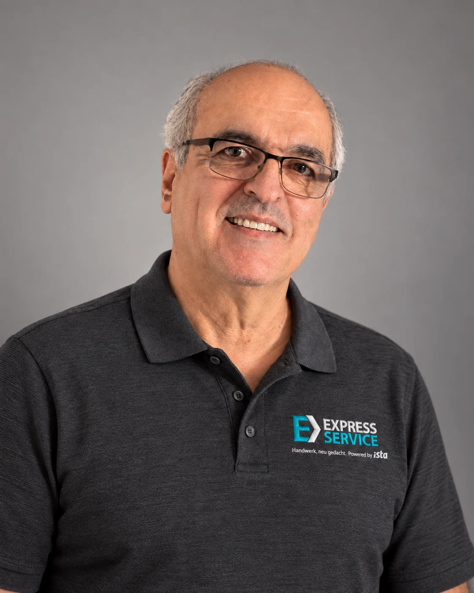

1963 08.12.1963
Griechenland
Bis zu meinem Umzug nach Deutschland im Jahr 1996 lebte ich in Griechenland.
FÜR ISTA EXPRESS · BONN-BEUEL
Liebes Recruiting-Team,
ich bin Jannis Tsopanoglou. Seit 1998 arbeite ich im Handwerk, vor allem mit Parkett und Boden. In dieser Zeit habe ich aber natürlich nicht nur einen Handgriff gelernt. Wenn bei einem Auftrag gebohrt, geschraubt, geschnitten, angepasst oder montiert werden musste, habe ich mich darum gekümmert.
Deutsch ist nicht meine Muttersprache und ich formuliere nicht immer perfekt. Im Arbeitsalltag hat es aber immer funktioniert: Ich frage nach, höre zu und bringe einen Auftrag ordentlich zu Ende. Über die Jahre habe ich mit ganz unterschiedlichen Menschen gearbeitet – mit Familien, Rechtsanwälten und vielen anderen Kunden.
Ich möchte noch ein paar Jahre aktiv arbeiten, aber körperlich etwas ruhiger als bisher. Bei ista Express kann ich meine Erfahrung nutzen und gleichzeitig etwas Neues lernen.

POLO-CHECK ✓Das Polo sitzt.
Die Stickerei darf man ruhig genauer ansehen.
Die Stickerei ist digital. Die Erfahrung ist echt.
Hier sieht man die wichtigsten beruflichen Stationen – Punkt für Punkt bis heute.
Bis zu meinem Umzug nach Deutschland im Jahr 1996 lebte ich in Griechenland.
1996 bin ich nach Deutschland gezogen. Ein großer Teil meiner Familie lebte bereits hier.
Seit 1998 selbstständig im Bodenhandwerk – für private und gewerbliche Kunden.
Nach fast 30 Jahren Selbstständigkeit möchte ich wieder fest angestellt arbeiten – verlässlich, praktisch und mit meiner ganzen Erfahrung.
Bodenhandwerk ist mein berufliches Fundament. Dazu kommt vielseitige praktische Erfahrung über das eigene Gewerk hinaus. Ich schaue mir an, was gebraucht wird, denke mit und packe an.
Ein freundliches Wort gehört für mich genauso zum Einsatz wie das passende Werkzeug. Ich höre zu, spreche Arbeiten verständlich ab und gehe sorgsam mit dem Zuhause meiner Kunden um.
Messgeräte, Rauchwarnmelder und die digitale Dokumentation sind für mich ein neues Lernfeld. Ich bringe handwerkliche Praxis mit und nehme die Einarbeitung ernst.
Ich habe noch ein paar Jahre bis zur Rente und möchte diese Zeit aktiv nutzen. Nach fast drei Jahrzehnten im eigenen Betrieb darf die Arbeit gern planbarer und körperlich etwas ruhiger werden.
Aufhören möchte ich deshalb noch lange nicht. Ich möchte meine Erfahrung einbringen, mit Menschen arbeiten und mich in neue Geräte und Abläufe einarbeiten.
Vielleicht lernen wir uns dann persönlich kennen. Ich bringe Erfahrung mit – und Lust auf den nächsten Schritt.